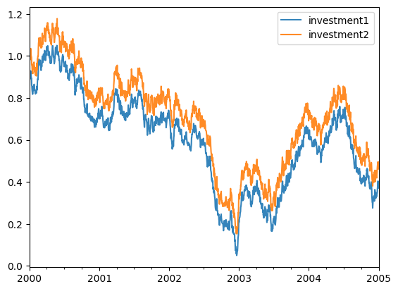
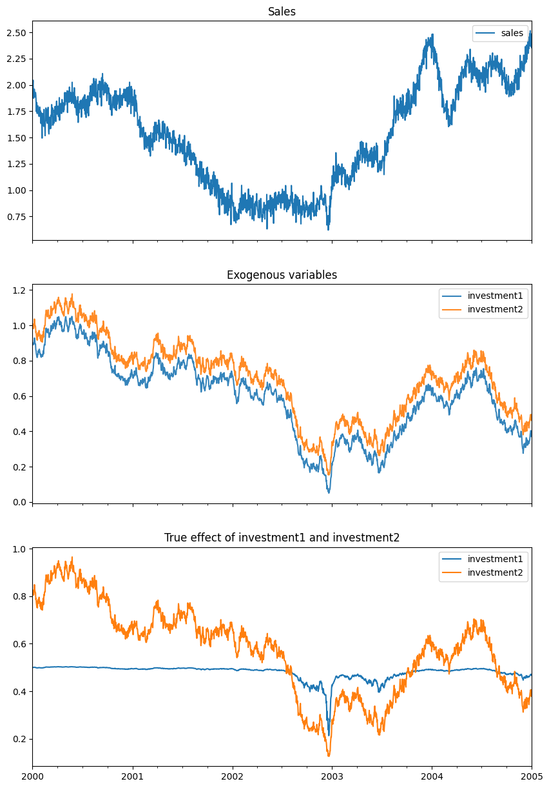
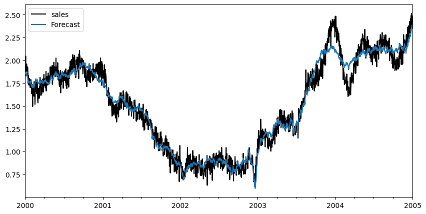
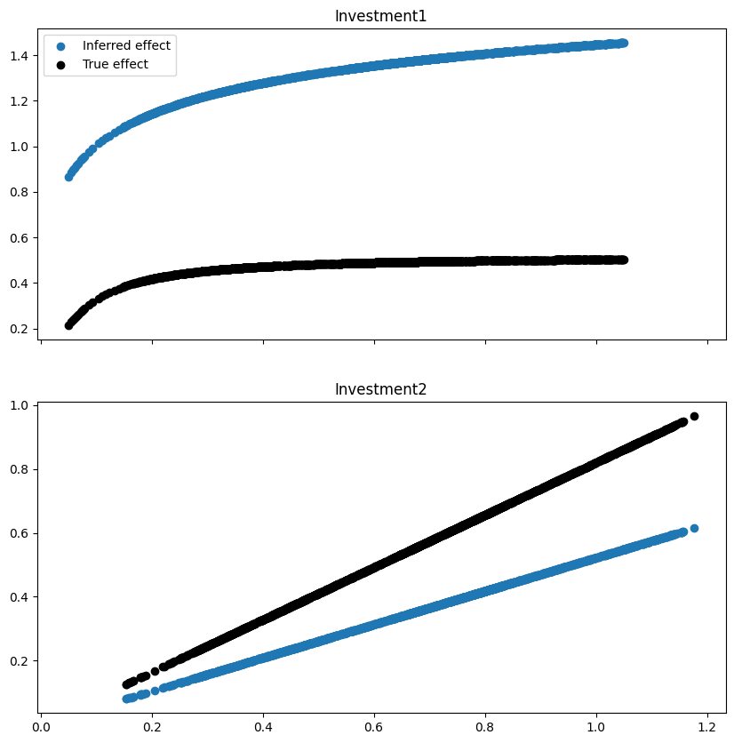
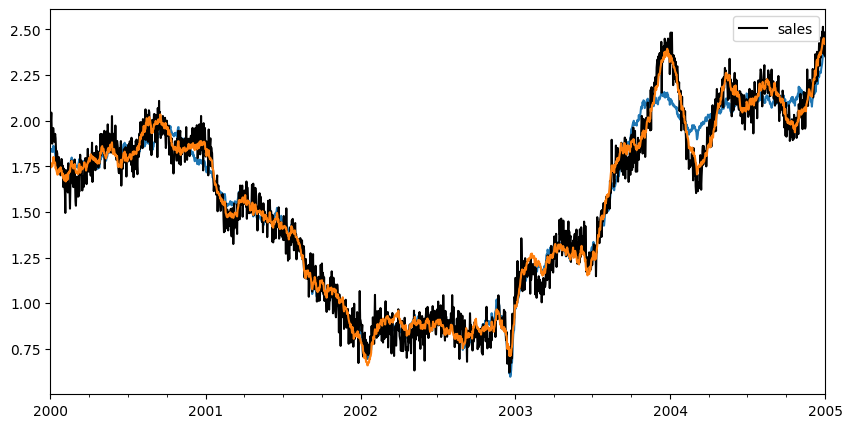
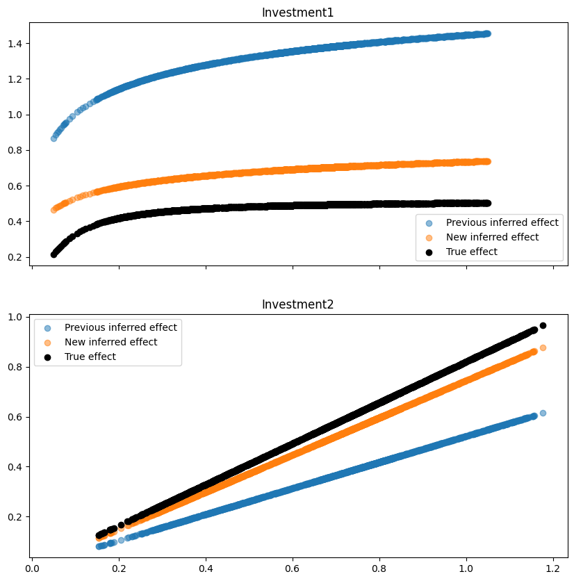

Lift test
In this example, we will show how you can leverage lift tests executed in the past to improve the detection of the effect of an intervention. This example is inspired by the one in PyMC-Marketing documentation.
Get data from simulated dataset
In this exercise, we will load a synthetic dataset composed of a target timeseries (sales, for example) and two exogenous variables (investment1 and investment2). The two variables are highly correlated.
From this dataset, we also obtain the results of a lift test.
import matplotlib.pyplot as plt
from prophetverse.datasets._mmm.lifttest import get_dataset
y, X, lift_test, true_effect, model = get_dataset()
Output: [1]

fig, ax = plt.subplots(figsize=(10, 15), nrows=3, sharex=True)
y.plot.line(ax=ax[0])
ax[0].set_title("Sales")
X.plot.line(alpha=0.9, ax=ax[1])
ax[1].set_title("Exogenous variables")
true_effect.plot.line(ax=ax[2])
ax[2].set_title("True effect of investment1 and investment2")
fig.show()
Output: [2]

The lift test dataframe looks like below, with the information of how a delta in the exogenous variable (investment1 and investment2) affects the target variable (sales). Note that the lift test is assigned to dates, since the effect of the intervention can vary with time.
Output: [3]
| lift | x_start | x_end | |
|---|---|---|---|
| 2000-10-25 | 0.153197 | 0.727573 | 0.110823 |
| 2001-05-04 | 0.026069 | 0.734700 | 0.386165 |
| 2000-10-05 | 0.106792 | 0.823932 | 0.159322 |
| 2002-03-06 | 0.018927 | 0.634787 | 0.406046 |
| 2002-06-11 | 0.014647 | 0.613452 | 0.431412 |
| 2000-12-27 | 0.163153 | 0.735653 | 0.103977 |
| 2000-09-06 | 0.014425 | 0.868366 | 0.538854 |
| 2002-04-24 | 0.079895 | 0.547882 | 0.179940 |
| 2002-12-09 | 0.166648 | 0.151073 | 0.051690 |
| 2003-11-10 | 0.061573 | 0.554193 | 0.214952 |
Creating the model
We create the model to estimate the effect of the exogenous variables. Since this is an exercise, we use the effects that are the ground truth. However, we will see that even with a correct specification, the correlated exogenous variables can lead to bad estimates.
import numpyro.distributions as dist
from prophetverse.effects import (HillEffect, LinearEffect,
LinearFourierSeasonality)
from prophetverse.effects.trend import PiecewiseLinearTrend
from prophetverse.engine import MAPInferenceEngine
from prophetverse.engine.optimizer import LBFGSSolver
from prophetverse.sktime import Prophetverse
from prophetverse.utils.regex import exact, no_input_columns
model = Prophetverse(
trend=PiecewiseLinearTrend(
changepoint_interval=100,
changepoint_prior_scale=0.001,
changepoint_range=-100,
),
exogenous_effects=[
(
"seasonality",
LinearFourierSeasonality(
freq="D",
sp_list=[365.25],
fourier_terms_list=[3],
prior_scale=0.1,
effect_mode="multiplicative",
),
no_input_columns,
),
(
"investment1",
HillEffect(
half_max_prior=dist.HalfNormal(0.2),
slope_prior=dist.Gamma(2, 1),
max_effect_prior=dist.HalfNormal(1.5),
effect_mode="additive",
),
exact("investment1"),
),
(
"investment2",
LinearEffect(
prior=dist.HalfNormal(0.5),
effect_mode="additive",
),
exact("investment2"),
),
],
inference_engine=MAPInferenceEngine(
num_steps=1000, optimizer=LBFGSSolver(memory_size=100, max_linesearch_steps=100)
),
)
model.fit(y=y, X=X)
components = model.predict_components(fh=X.index, X=X)
Output: [4]
fig, ax = plt.subplots(figsize=(10, 5))
y.plot.line(ax=ax, color="black", label="Sales")
components["obs"].to_frame("Forecast").plot.line(ax=ax)
fig.show()
Output: [5]

fig, axs = plt.subplots(figsize=(10, 10), nrows=2, sharex=True)
ax = axs[0]
ax.scatter(X["investment1"],
components["investment1"],
label="Inferred effect")
ax.scatter(X["investment1"],
true_effect["investment1"],
label="True effect", color="black")
ax.set_title("Investment1")
ax.legend()
ax = axs[1]
ax.scatter(X["investment2"], components["investment2"])
ax.scatter(X["investment2"], true_effect["investment2"], color="black")
ax.set_title("Investment2")
fig.show()
Output: [6]

Using lift test to improve the estimation
We will use the lift test to improve the estimation of the effect of the exogenous variables.
We wrap the original effects of investment1 and investment2 in a LiftExperimentLikelihood effect.
This effect will use the lift test data to add a new likelihood term to the model.
Creating the effects
from prophetverse.effects.lift_likelihood import LiftExperimentLikelihood
lift_experiment_effect1 = LiftExperimentLikelihood(
effect=model.get_params()["investment1"],
lift_test_results=lift_test1,
prior_scale=1e-2,
likelihood_scale=1,
)
lift_experiment_effect2 = LiftExperimentLikelihood(
effect=model.get_params()["investment2"],
lift_test_results=lift_test2,
prior_scale=1e-2,
likelihood_scale=1,
)
Fitting the new model
new_model = model.clone()
new_model.set_params(
investment1=lift_experiment_effect1,
investment2=lift_experiment_effect2,
)
new_model.fit(y=y, X=X)
Output: [8]
Prophetverse(exogenous_effects=[('seasonality',
LinearFourierSeasonality(effect_mode='multiplicative',
fourier_terms_list=[3],
freq='D',
prior_scale=0.1,
sp_list=[365.25]),
'^$'),
('investment1',
LiftExperimentLikelihood(effect=HillEffect(effect_mode='additive',
half_max_prior=<numpyro.distributions.continuous.HalfNormal object at 0x31da99cd0>,
max_effect_prior...
2002-04-24 0.155792 0.656459 0.466476
2002-12-09 0.047018 0.240272 0.182935
2003-11-10 0.446803 0.672043 0.127181,
prior_scale=0.01),
'^investment2$')],
inference_engine=MAPInferenceEngine(num_steps=1000,
optimizer=LBFGSSolver(max_linesearch_steps=100,
memory_size=100)),
trend=PiecewiseLinearTrend(changepoint_interval=100,
changepoint_prior_scale=0.001,
changepoint_range=-100))Please rerun this cell to show the HTML repr or trust the notebook.Prophetverse(exogenous_effects=[('seasonality',
LinearFourierSeasonality(effect_mode='multiplicative',
fourier_terms_list=[3],
freq='D',
prior_scale=0.1,
sp_list=[365.25]),
'^$'),
('investment1',
LiftExperimentLikelihood(effect=HillEffect(effect_mode='additive',
half_max_prior=<numpyro.distributions.continuous.HalfNormal object at 0x31da99cd0>,
max_effect_prior...
2002-04-24 0.155792 0.656459 0.466476
2002-12-09 0.047018 0.240272 0.182935
2003-11-10 0.446803 0.672043 0.127181,
prior_scale=0.01),
'^investment2$')],
inference_engine=MAPInferenceEngine(num_steps=1000,
optimizer=LBFGSSolver(max_linesearch_steps=100,
memory_size=100)),
trend=PiecewiseLinearTrend(changepoint_interval=100,
changepoint_prior_scale=0.001,
changepoint_range=-100))PiecewiseLinearTrend(changepoint_interval=100, changepoint_prior_scale=0.001,
changepoint_range=-100)PiecewiseLinearTrend(changepoint_interval=100, changepoint_prior_scale=0.001,
changepoint_range=-100)fig, ax = plt.subplots(figsize=(10, 5))
components["obs"].plot.line(ax=ax)
y.plot.line(ax=ax, color="black")
new_components["obs"].plot.line(ax=ax)
Output: [10]
<Axes: >

fig, axs = plt.subplots(figsize=(10, 10), nrows=2, sharex=True)
ax = axs[0]
ax.scatter(X["investment1"],
components["investment1"],
label="Previous inferred effect", alpha=0.5)
ax.scatter(X["investment1"],
new_components["investment1"],
label="New inferred effect", alpha=0.5)
ax.scatter(X["investment1"],
true_effect["investment1"],
label="True effect", color="black")
ax.set_title("Investment1")
ax.legend()
ax = axs[1]
ax.scatter(X["investment2"],
components["investment2"],
label="Previous inferred effect", alpha=0.5)
ax.scatter(X["investment2"],
new_components["investment2"],
label="New inferred effect", alpha=0.5)
ax.scatter(X["investment2"],
true_effect["investment2"],
color="black", label="True effect")
ax.set_title("Investment2")
ax.legend()
fig.show()
Output: [11]

Conclusion
In this example, we showed how you can use lift tests to improve the estimation of the effect of exogenous variables. The highlights are the following:
- We used a synthetic dataset with two exogenous variables that are highly correlated.
- We showed that even with a correct specification of the model, the correlated exogenous variables can lead to bad estimates.
- We then used the lift test to improve the estimation of the effect of the exogenous variables.
- We wrapped the original effects in a
LiftExperimentLikelihoodeffect that uses the lift test data to add a new likelihood term to the model.